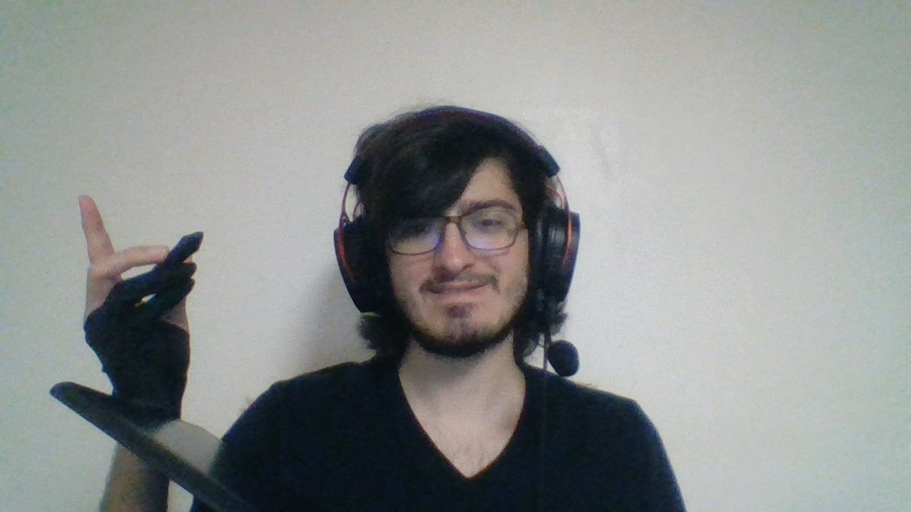

Hello I am Joseph Boumerhi, I am an artist who is interested in the idea of multiplicity and interconnections of objects, as such my favorite subject is game development, and 3D modelling being a close second. Besides my main interest, I have dabbled with electronics, audio, and various topics that pique my interest. Usually if something might be my interest, I'll either begin looking up documents or content creators online and make an effort to digest them progressively, or I could have an obssesive drive towards it.
I am very enthusiastic about creating artifacts, making game(s) with themes derived from what have been piquing my interests and having things in tandem reflect this, so knowledge made manifest in an object. Recent interests would include my newfound interest in the “flesh”, how we yearn and wish to intersect in an endearing or malicious sense, how one's body, in its obsession or imperfections in the form of disabilities can form an opportunity for exploration. I've also been obsessed on the idea of multiplicity on how it's resplendent as it is repulsive. I've found gaming, in play and in their development, to be an opportunity to explore human desires and processes, and to perhaps divulge messages onto a participant. They can be just pure fun if one pleased, they don't need to preach or inform.
Thinking about games has felt reminiscent to doodling from when I was a kid, the work just comes out, rather than meeting a form of resistance when feeling with doing it. For inspirations, I'd honestly just say that I'll consume it if it interests me, and in that consumption triggers something I perceived or learned from the consumption, I'll draw from it.
While my skills are growing further and wider, such as development for games and the web, music, design, drawing, 3D modelling, I still have rudimentary knowledge about them. Although my works aren't the most refined, I've been deeply heartfelt for them as they were needed for my own growth. I've found Concordia, as a place of growth and an institution, led me into becoming more insightful and paying attention to nuances and what those nuances represent when observing the world or myself.
